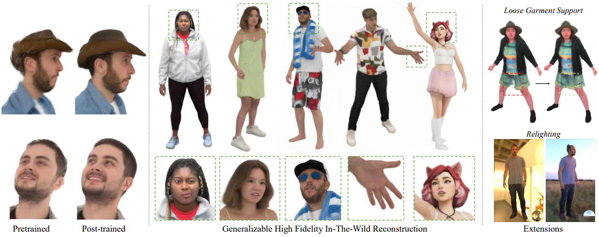

About Me
I am currently a research engineer at Meta.
I architected Meta's largest 3D human-centric data engine, from data curation to various mid-level representations, for hundreds of millions of videos from multiple data sources.
My research interest lies in human understanding, self-supervised learning and conditional multimodal video generation. I am interested in building foundation models that can understand motions, behaviors, and interactions with the physical world.
Publications



Hobbies
I have been an avid board wargame player since college, spending ~1000 hours at the tables.
I created and maintained one of the largest active board wargame communities in China for nearly 10 years. I wrote multiple popular guides, including "Paths of Glory: A Probabilistic Perspective", which has been the de facto must-read for every new Chinese player of this classic WWI wargame since 2018 (It still has 200+ active visitors per month after 8 years!)
I also write fanfics anonymously. One of my series (for Bandori) has accumulated 100k+ views on Bilibili.